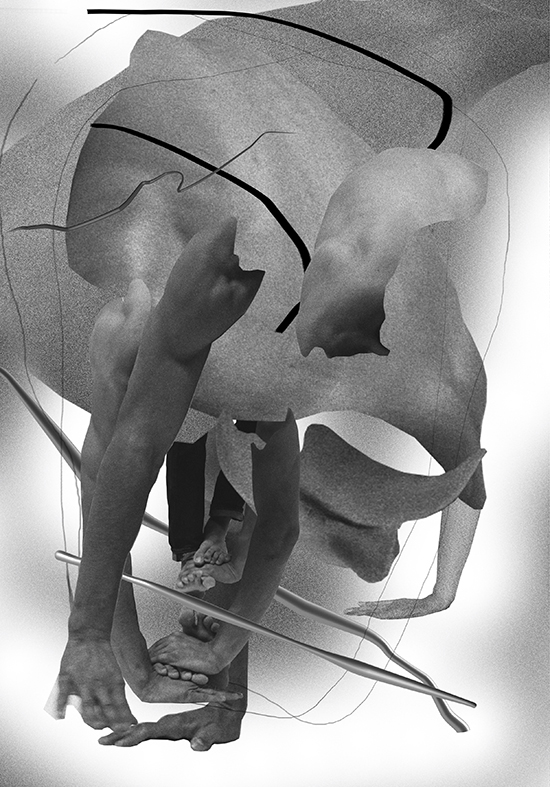
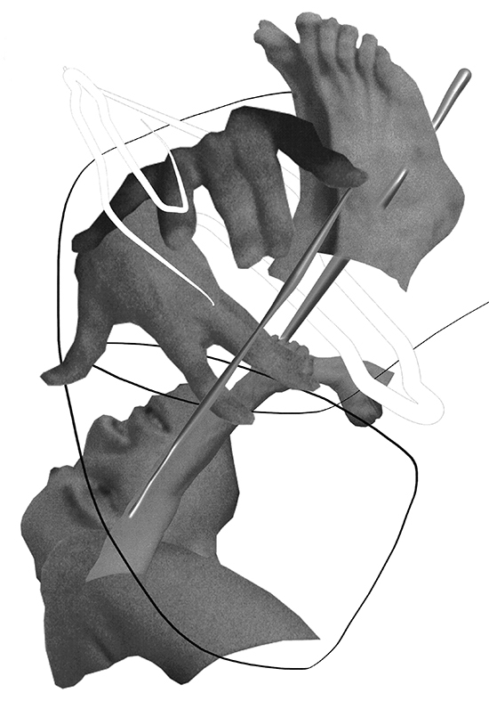
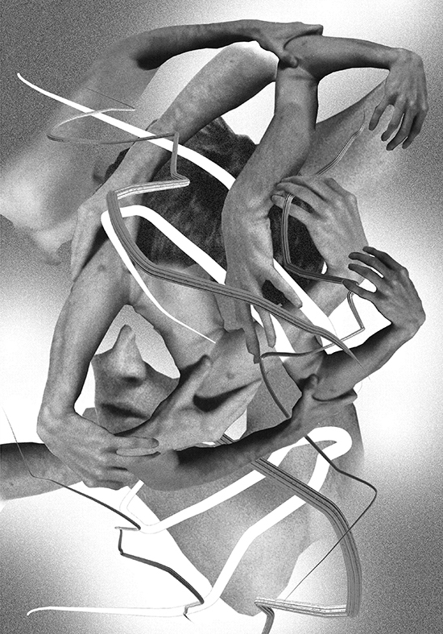
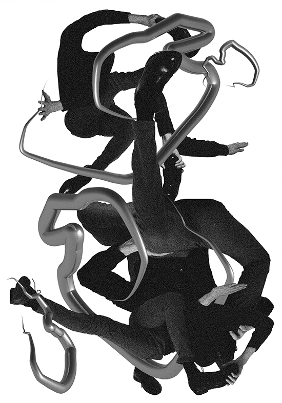
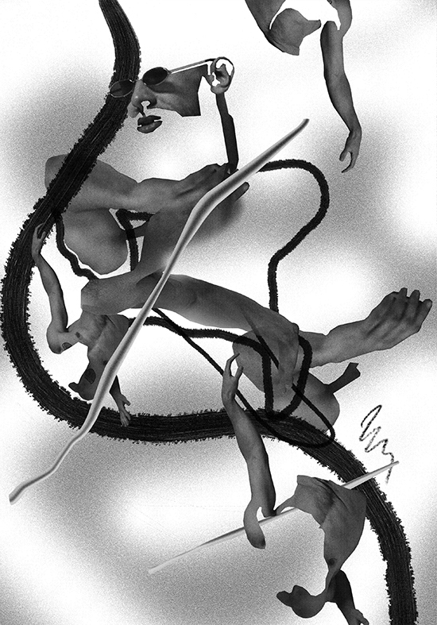
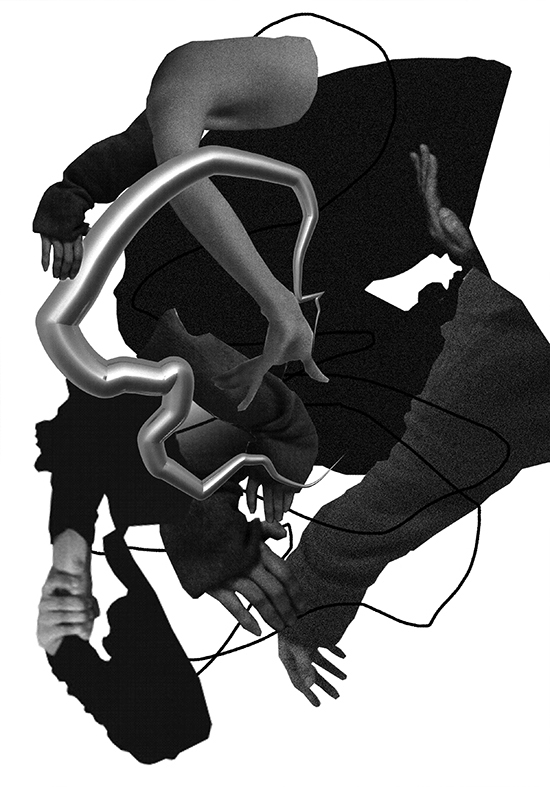
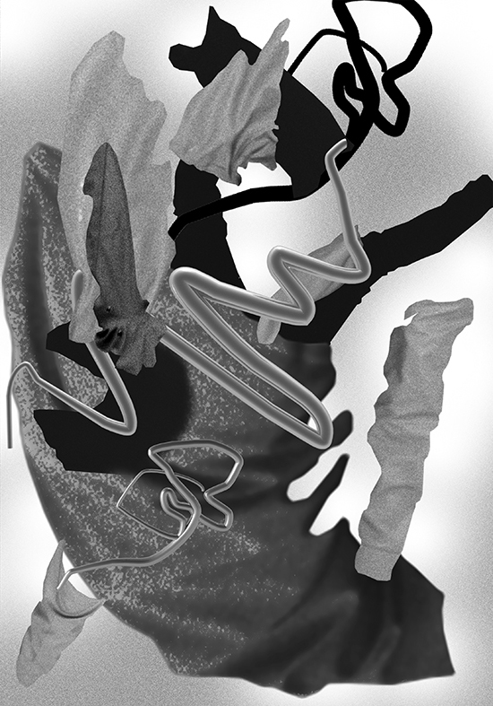
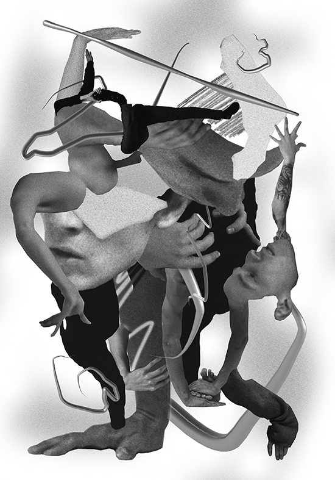

1/10

2/10

3/10

4/10

5/10

6/10

7/10

8/10

9/10
10/10

'Synthesis' is a project by a Moscow-based photographer Lora Bergen. Together with two other image-makers we contributed to her project about movement and time. This serie of collages is my input. The same way as deconstruction is a way of understanding the relationship between text and meaning—collage is aiming to do the same but through visual means. The intricate, but at the same time intriguing part about this serie, is its starting point—the black and white photographs capturing an unstable moment during the dance performance, influencing the uncertain direction from its very beginning. The dance itself is influenced by another ever changing media–music, at least our perception of it is never fixed. It is creating a chain reaction of unstable events influencing each other. My contribution—the final step. I broke the ‘chain’ into separate elements and chose those, which felt necessary for the particular collage: contraforma, draping fabric, skin texture, tension in the muscle. I put them back together in a different manner. It is my take on reflecting on the whole process. Perhaps looking at these elements in a rearrangement and a new context will give a new insight.
Risoprint A3